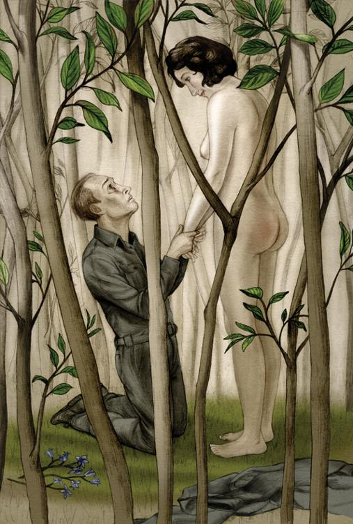

温斯顿沿着小巷走。阳光透过树荫，洒满一地斑点。那些树叶遮盖不到的地方，看来真像一个个金黄色的池塘。树荫下左边的地面，遍布风铃草。这是五月二号，空气柔和得使人的皮肤有被吻的感觉。附近的森林里传来斑尾林鸽的嘤鸣声。
他来得早了一点。沿路都顺利得很，女郎又是识途老马，否则他说不定会担心起来。她选这地方来约会，准会安全的。一般而言，乡下并不一定比伦敦安全。电幕是不见了，但谁知道四边有没有安放隐蔽的麦克风？再说，你一个人旅行难免受人注意。一百公里以内的活动虽然不必申请什么证件，但巡逻警察常在车站附近出没，遇到党员就要盘问。幸好这次他们没有出现，而从车站步行到这里时，他特地偶尔回望一下，看看有没有人跟踪他。火车满载无产者，因为天气像夏天一样暖和的关系吧，显出一片假日气氛。温斯顿坐的那节木椅子车厢，就给一家人坐满了，老的有牙齿全掉的曾祖母，小的有包着尿布的婴儿，据说是赶到乡下跟亲戚共度一个下午。“也乘便买些黑市黄油来涂面包。”他们毫不隐瞒地对他说。
小巷的路面宽阔起来，没多久他就到了她说过那条夹在灌木丛中的小径，看来是牲口的过道。他没有表，但猜想还未到十五点。风铃草长得密密麻麻的，走路时难免踩踏到。他跪下来摘这些蓝色铃状的小花，一来为了打发时间，二来他心中动了一个念头：等一下见面时送她一束花！他摘了一大束，正拿到鼻子前去嗅嗅那微微的不好闻的香味时，听到背后有人踩着地上的树枝前来，吓得浑身发抖。他决定装着没听到，继续采下去。来者可能是女郎，也可能是跟踪他的人。这时回头望去，就表示你心中有鬼。他一朵一朵地摘着，一只手轻轻地搭在他的肩上。
他抬头，是那女郎。她摇着头，显然是警告他不要做声，然后拨开矮枝步入林中。她对这小径的地势熟悉得很，因为遇到地上的水滩时她瞧也不用瞧就跳过去了。温斯顿在后面跟着跑，手上那束花还紧抓着不放。他看到女郎时第一个反应是如释重负。可是现在看到她苗条结实的身体在前面移动，腰间系着的猩红贞操带刚好把她臀部美好的线条显露出来，不由得生出强烈的自卑感。即使在这一刻，如果她转过头来看他一眼，决定离他而去的话，他也不会觉得奇怪。甜得像蜜糖一样的空气与绿油油的树叶令他自惭形秽。这种感觉从离开车站时就产生了。五月的阳光令他觉得自己既肮脏又苍白，一个长期身处室内的人，连皮肤上的毛孔里也藏着伦敦的煤烟。对的，她大概还没有在室外光亮的地方看过他一次。他们已到了她说过的那株倒在地上的枯树旁。她跳过去，拨开荆棘。初看时，这地方并无出口。温斯顿跟着她走了一会儿，才发觉别有洞天，原来他们已到了一个长满青草的小土墩，四边有高高的树苗围绕着。女郎这时停了下来。
“我们到啦！”
她离他身边还有几步，可是他却不敢上前。
“刚才我在巷子内没有说话，就是怕那里装有麦克风，”她接着说，“照我猜想，那不大可能，但谁敢担保？要是给那些猪猡认出我们的声音，那就完了。这儿是没问题的。”
他还是不敢接近她，只是机械地重复她的话：“这儿没问题？”
“对，你看看这些树枝。”那是不久以前砍过的木，现在重新发枝，最大的一棵也没有手腕那么粗。“藏不下麦克风，是不是？再说，我以前已来过这里。”
他们只是找话来说而已。他现在距离她更近了。她挺直地站在他面前，脸上挂着一个近乎嘲弄的笑容，好像怪他行动拖泥带水的样子。他手上那束风铃草好像是闹性子的样子，全滑到地上来。他执着她的手。
“你相信吗，”他说，“这一分钟以前我还不知道你的眼睛是什么颜色。”淡褐色，他注意到了，睫毛却是黑的，“现在你已清楚看到我是什么样子了，很失望，是不是？”
“谁说的？”
“我三十九岁了，还有一个摆脱不了的老婆。脚上患了静脉曲张，嘴巴里装了五颗假牙。”
“那有什么关系。”女郎说。
下一分钟，她已在他怀中，也不知是谁采取的主动。起先，他除了半信半疑外，别无其他感觉。那充满青春活力的胴体紧贴在他胸前，一头浓密的黑发摩擦着他的脸颊。呀，她别过脸来让他亲吻那两片红润的嘴唇！她两手搂着他的脖子，“蜜糖”、“甜心”地叫着他。他把她扭到地上，她一点反抗的意思也没有。本可以为所欲为的，只是除了肌肤的接触外，他一点冲动也没有。他现在还是半信半疑，但同时也觉得有点骄傲。虽然生理上不能反应，但最合他高兴的是这种事居然发生了。事情也实在太突然，她的青春和美丽令他害怕，但他说不出害怕的理由来。也许长久以来他已习惯了没有女人的生活。女郎站了起来，从头发上扯下一根风铃草。她靠着他坐下，搂着他的腰。
“别担心。不急，反正整个下午都是我们的。你说这是不是理想的幽会地方？这是我在一次公社郊游时迷了路找到的。谁闯过来你百尺以外也可以听到脚步声。”
“你叫什么名字？”温斯顿问。
“朱丽亚。我知道你叫温斯顿——温斯顿·史密斯。”
“你又怎样知道的？”
“大概我查根究底的能力比你强吧。好，现在告诉我，我交字条给你前，你对我的印象怎样？”
他觉得没有任何理由要骗她。一开始就挑最坏的来讲，也是表示爱情的一种方式。
“我恨死你了，”他说，“我想过先把你强奸，然后再杀你。两个星期前，我真的考虑过要用石块砸破你的头。你真的要知道的话，那我不妨对你说，我曾经怀疑过你是否与思想警察有关系。”
朱丽亚听后，乐得大笑起来，显然觉得这是对她掩人耳目高超技术的恭维。
“把我看作思想警察？不可能吧？”
“也差不多了。你站在我的立场看看。你的外貌、一举一动——就说你的青春、健康、活泼这些特质好了——都使我不禁想到你可能——”
“你以为我是个模范党员？言谈举止纯洁，举大旗参加游行，喊口号，热心参加公社各种活动，是不是？你一定以为我只要找到半个借口，就检举你是思想犯，把你干掉，是不是？”
“唔，差不多是这样。你也知道，不少年轻的女孩子干的就是这种事情。”
“就是因为这劳什子的东西。”她边说边把腰间那条猩红的“反性”带子解开，一扔扔到树梢上去。然后，好像刚才解腰带时提醒了她什么东西似的，她伸手到制服的口袋去摸了一片巧克力出来，折了一半分给温斯顿。他还没接过来就从气味晓得这是一块身份不寻常的巧克力，糖质黑得发亮，包在锡纸内。普通买到的是暗淡的棕褐色，容易折碎，气味如同烧垃圾的烟火。可是过去他也尝过类似刚才朱丽亚给他的那种上好巧克力，那阵芬芳的气味唤起了他的回忆，什么时候记不清楚了，只是现在想来印象还鲜明得令人惆怅就是。
“哪里弄来的？”他问。
“黑市。”她一点也不在乎地说，“其实表面看来我确实是你所说的那类女孩子，精于各种游戏，以前还做过探子团的队长哩。一个星期我志愿替青年反性联盟服务三个晚上，到全伦敦的街头去替她们贴那些屁话连天的招贴，游行时举大旗总有我的份。做什么事都自告奋勇，兴高采烈。这是人云亦云、永不落后的表现，对不对？但这也是自保的唯一办法了。”
巧克力开始在温斯顿的舌头上融化，味道真叫人心畅神怡。可是刚才勾起的记忆还没有消逝，印象虽鲜明却又无法捉摸。最后他决定不再想下去了，因为他明白这是他要忘记而一直缠着他不放的心事。
“你这么年轻，”他说，“比我年轻十岁甚至十五岁吧。告诉我，我这样一个人还有什么吸引你的？”
“你脸上流露的气质与别人不同，因此我决定冒一次险。我鉴貌辨色，知道谁属于格格不入的那一类。我第一次看到你，就知道你是反对他们的。”
他们，看来就是指党，特别是内党。她话说得这么旁若无人，态度又表现得这么憎厌，虽然他知道这地方安全不过，也难免不安起来。最令他惊奇的一点是她提到有关他们的事，都用粗话形容——“这劳什子的东西”、“屁话连天的招贴”。党员照理说是不能讲粗话的，温斯顿自己就很少讲，最少在别人面前如此。朱丽亚却不同，每次提到党，尤其是内党，她用的字眼只有在横街窄巷的墙壁上看得到。温斯顿并不觉得讨厌，这不过是她对党和党所代表的一切的反抗姿态而已。不但不讨厌，他反而觉得正常得很，健康得很，犹如一匹马闻到了难以下咽的稻草打个喷嚏一样。他们离开了小土墩，在树荫下漫步，遇到小径宽阔得可以容纳两个人并肩走时，他们就互相搂着腰身走。温斯顿这才注意到，朱丽亚解下那猩红带子后，腰肢柔软多了。他们说话的声音低得像呢喃，因为朱丽亚说过，一离开空旷的地方就得留神了。他们已来到小树林的旁边，朱丽亚就阻止他了。
“别再走了，那边说不定有人。只要我们不离开树林就比较保险。”
他们站在榛树下。透过树梢洒下来的阳光，照到脸上还是热炽炽的。温斯顿向前面的田野遥望，不禁暗暗吃惊。这一切似曾相识。对了，被野兔咬得秃秃的草地上有一条小径，两旁不是有许多鼹鼠洞？越过草地不是一个久未修剪的围篱吗？里面的榆树浓密的枝叶随着微风轻荡，像女人的头发。虽然看不到，但离这儿附近不远的地方，一定有清溪汇流而成的小池塘，雅罗鱼嬉游其中。
“附近是不是有小溪？”他低声问。
“对啦，但不在这里，在另外一片田野的旁边。里面有不少大鱼呢，你在柳荫下可以看到它们在池塘内游来游去。”
“呀，那就是金乡了——我是说，几乎像金乡。”他沉吟着。
“金乡？”
“说着玩的。金乡是我在梦中有时看到的风景。”
“看！”朱丽亚轻唤着。
一只画眉鸟在离他们头顶不到五米的树丫上停下来，它大概没看到他们吧。他们在树荫里，而它在阳光下。只见它拍了拍翅膀，点了点头，好像要对太阳敬礼的样子，然后引吭高歌起来。在这阒无声息的下午，它的音量可真怕人！温斯顿与朱丽亚依偎在一起，听得出神。它一曲接一曲地唱下去，花样真多，从来没重复过，好像故意要在他们面前露一手似的。有时它停下来几秒钟，拍拍翅膀，又一鼓作气高歌起来。温斯顿一直望着它，态度竟然变得有点虔诚起来。它究竟为谁唱？为什么唱？它既无伴侣，亦无对手，为什么要到这孤独的林边来浪费自己的歌声？他实在怀疑这附近有没有装上麦克风。他和朱丽亚说话这么轻，是收听不到的。画眉鸟的歌声，那准是声声入耳。说不定在麦克风那边的甲虫人，静心听着的就是这种歌声。没多久，这种天然的音乐把他心中的顾虑都消除了。他好像全身沐浴于阳光温暖的液体中，再不思考了，只是感受。在他臂弯里的腰肢温暖而柔软。他一扳把她扳到面前来，胸贴着胸，她整个身躯软得要融解在他跟前了。他的手摸到哪儿，哪儿就像水一样驯服。他们深深地吻着，跟开始时强凑起来那种感觉截然不同。松开手后，两人都重重地叹了口气。那只音乐鸟吃了一惊，振翼飞去。
温斯顿贴在她耳边说：“现在来，好不好？”
“这里不成，”她轻轻地回答说，“回到老地方去安全些。”
他们连忙举步回到小土墩，偶尔踩着枯枝，发出噼啪的声音。一到树苗围绕的空地，她就转过身面对着他。两人都喘着气，但她的嘴角已恢复了笑容。她瞟了他一眼，伸手去摸衣服的拉链，然后——对了，就像梦境里所见一样——一拉就把衣服脱光往地上一丢，其潇洒壮丽的姿势，好像足以把整个英社的文化毁灭掉！她赤裸的胴体在阳光下闪耀，但他的目光正在注视的，却是她那张微带雀斑、笑容坦率的面孔。他跪在她跟前，捧着她的双手。

“你以前这样做过吗？”
“当然，几百次了——最少也有几十次了。”
“跟党员来？”
“是的，常常跟党员来。”
“内党党员？”
“你说那些猪猡？老天，我怎会？但我告诉你，只要有半分机会，他们就会涎面讨求。你别看他们装出那种道貌岸然的样子！”
他的心激动得怦怦跳动。她已干过几十次了！他真希望是几百次！几千次！任何牵扯到腐败的事件都教他产生希望。谁知道呢？说不定党的内部已腐烂了。说不定表面看来煞有其事的牺牲奉献精神，其实是藏污纳垢的渊薮。如果他一个人能把麻风或梅毒传染给他们的每一个，他太愿意做了。他愿意干任何使他们腐化、堕落、崩溃的事。他把朱丽亚拉下来，两人面对面地跪在地上。
“你听着。你阅人越多，我越爱你，你懂吗？”
“再清楚不过了。”
“我憎恨纯洁，憎恨善良。我不要看到美德在任何地方存在。我希望每个人腐败得无可救药！”
“呀，那我太合你的胃口了，因为我正是腐败得无可救药！”
“你喜欢做……这个吗？我是说不单跟我，而是事情的本身。”
“这是最过瘾不过的事。”
这就是他最想听的话了。爱情的力量，再加上动物本能的原始性冲动，已足够把党推倒了。他把她按在风铃草掉落的草地上，这一次再无生理上的问题了。过一会儿他们两人急速的呼吸已渐趋平伏，舒服地分开瘫卧着。阳光越来越猛烈，两人累得想睡了。他伸手拿来丢在地上的制服，给她半盖着身子。一下子他们就睡着了，睡了差不多半个钟头。
温斯顿先醒来。他坐着端详朱丽亚的雀斑脸。她还睡得甜甜的，头压在手上。除了她的嘴巴，她不算得怎么漂亮。你细心看的话，在她眼角还可找到一两条鱼尾纹。她的头发不长，可是出奇的柔软浓密。这时他才想到他还不知道她姓什么，或住何处。
面对着这个因熟睡而显得无援无助的青春健康的胴体，温斯顿不禁生出爱怜之感。但这种感觉，跟刚才在榛树下听画眉鸟唱歌时没头没脑涌现出来的柔情，却不大一样。他拉开盖在她身上的制服，仔细地欣赏她柔滑的腰身。在从前，他想，男人看了女人的身体，觉得实在可爱，那就成了。今天可不同。今天既无纯洁的情，也无真正的欲。没有什么感情是纯正的，因为总会夹杂着恐惧和憎恨的成分。他们合体的经过是一场战事、一个胜利的高潮。这是对党沉重的一击。这是一次政治行动。